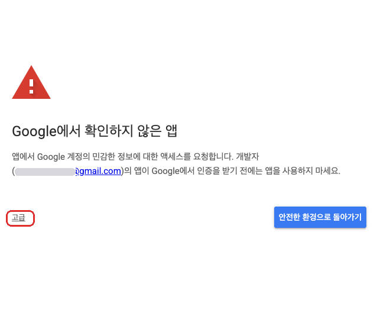
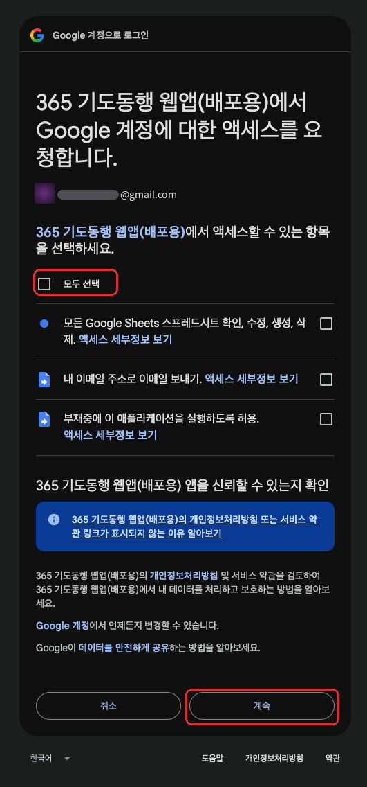
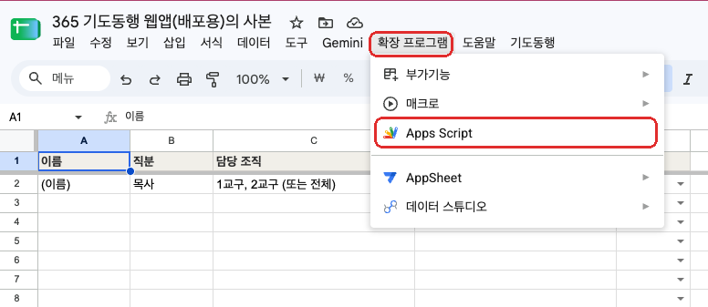
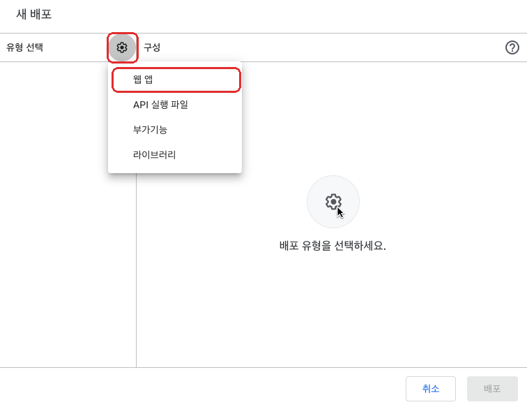
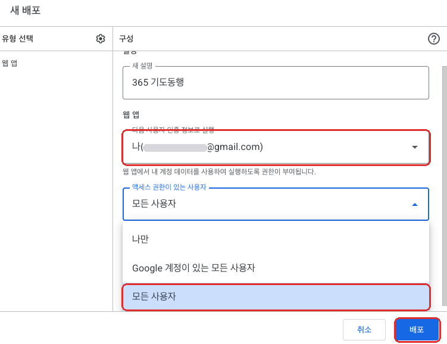
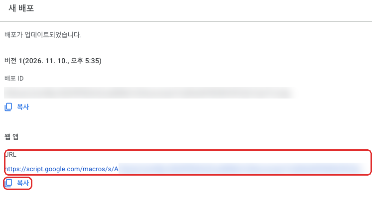

shepherdsdesk.github.io/itda)은 모든 교회·교구가 함께 씁니다. 교구마다 다른 것은 구글 시트 사본 하나뿐이고, 성도 명단과 보고는 그 시트에만 저장됩니다. 사랑방장에게 보내는 링크 끝의 &s=…가 우리 교구 시트로 연결해 줍니다.1사본 만들기
- 「내 드라이브에 사본 만들기」를 누릅니다.
- 구글 계정을 확인합니다. 명단과 보고가 이 계정의 드라이브에 쌓이므로 교회나 교구 공용 계정을 권합니다. 사역자가 바뀌어도 기록이 교회에 남습니다.
- 「문서 복사」 화면에서 사본 만들기를 누릅니다. 프로그램 코드(Apps Script)도 함께 복사됩니다.
- 시트 제목을 「잇다 5교구」처럼 알아보기 쉽게 바꿔 두세요.
2처음 설정
처음 한 번만 합니다. 구글이 권한을 묻는 화면이 몇 번 나옵니다. (아래 사진은 같은 방식의 다른 프로그램 화면이라 프로그램 이름만 다릅니다)
- 시트에서 F5(맥은 ⌘ R)로 새로고침하면 5~10초 뒤 메뉴 줄 끝에 「잇다」 메뉴가 생깁니다.
- 잇다 → ① 처음 설정 (시트 만들기)를 누르고, 「승인 필요」 창에서 확인을 누릅니다.
- 「Google에서 확인하지 않은 앱」 화면이 나오면 왼쪽 아래 고급을 누릅니다.

- 「…(으)로 이동(안전하지 않음)」 → 계속 → 「모두 선택」에 체크 → 계속을 누릅니다.

- 권한 창이 닫히면 잇다 → ① 처음 설정을 한 번 더 누릅니다. 「잇다 설정 완료!」 안내와 함께 탭 7개(설정·사용자·성도명단·주일보고·기도제목·목회자응답·문자자료)가 만들어집니다.
3체험판 둘러보기 · 사용키 넣기
처음 설정이 끝나면 체험교구가 만들어져 있습니다. 열두 제자가 사랑방 세 곳(갈릴리1·갈릴리2·예루살렘1)에 나뉘어 있고, 지난 3주 예시 보고도 들어 있습니다.
| 체험 계정 | 내용 |
|---|---|
| admin | 체험교구 관리자. 접속코드는 사본마다 다르게 만들어지며, ① 처음 설정 안내 창과 [사용자] 탭에 나옵니다.메뉴 잇다 → ④ 체험 admin 코드 새로 만들기를 누르면 코드와 링크가 바뀌고 예전 것은 막힙니다. |
| 베드로 · 빌립 · 작은야고보 | 각 사랑방의 사랑방장. 사랑방장 화면을 직접 체험해 볼 수 있습니다. |
- 4·5단계로 배포하고 admin 링크로 들어가 화면을 둘러봅니다. 체험판에서는 예시 명단만 다룰 수 있고, 실제 명단 파일 올리기는 사용키를 넣은 뒤 열립니다.
- 소개 페이지에서 사용 요청을 보내면 교회이름에 맞춘 사용키(예:
ITDA-T270110-1A2B3C4D)를 보내 드립니다. - 「설정」 탭 교회이름을 사용 요청 때 적은 이름과 똑같이 적고, 메뉴 잇다 → ③ 사용키 넣기에 붙여 넣습니다. (앱 관리자 메뉴의 🔑 사용키 넣기도 됩니다)
- 메뉴 잇다 → ⑤ 체험 데이터(열두 제자) 지우기를 누르고, 「사용자」 탭에 본인을 넣습니다.
| 칸 | 적을 내용 |
|---|---|
| 이름 | 본인 이름 |
| 역할 | 관리자 — 우리 교구 명단·사랑방장·교역자를 관리합니다 |
| 교구 | 담당 교구 (예: 5교구) — 교회 명단 파일의 소속과 같은 이름으로 |
4웹 앱으로 배포하기
우리 교구 서버 주소를 만드는 단계입니다. 처음 한 번만 합니다.
- 시트 메뉴 확장 프로그램 → Apps Script를 누릅니다.

- 오른쪽 위 파란 배포 → 새 배포를 누르고, 「유형 선택」 옆 톱니바퀴 ⚙ → 웹 앱을 고릅니다.

- 아래처럼 설정하고 배포를 누릅니다.
· 다음 사용자 인증 정보로 실행: 나(내 이메일)
· 액세스 권한이 있는 사용자: 모든 사용자

- 액세스 승인을 누르고, 경고 화면이 다시 나오면 2단계처럼 고급 → 이동 → 계속 → 모두 선택 → 계속을 누릅니다.
- 「웹 앱 URL」 아래 복사를 누릅니다.
/exec로 끝나는 이 주소가 우리 교구 서버 주소입니다.
5내 링크로 들어가기
- 시트로 돌아와 잇다 → ② 접속코드·개인 링크 만들기를 누릅니다.
- 「웹 앱 주소 넣기」 창에 4단계에서 복사한 주소를 붙여 넣고 확인을 누릅니다.
- 안내 창에 내 개인 링크가 나옵니다. 사용자 탭의 「개인링크」 칸에도 들어 있습니다. 카카오톡 「나와의 채팅」으로 보내 휴대폰에서 엽니다.
- 로그인 없이 바로 교구 현황이 열립니다. 안내에 따라 홈 화면에 추가해 두세요.
6교구 명단 올리기
교회 시스템에서 교구 명단을 엑셀로 내려받아 그대로 올립니다. 칸 순서나 맨 위 제목 줄은 맞추지 않아도 됩니다.
- 앱에서 명단 관리 → 📤 파일 선택을 누르고 명단 파일을 고릅니다. (PC에서 앱을 열어 올리면 편합니다)
- 미리 보기에서 마을·사랑방별 인원, ★ 사랑방장, ✝ 교구목사가 맞는지 확인합니다.
- 추가·갱신을 고르고 반영하기를 누릅니다.
| 교회 명단의 칸 | 잇다에서 |
|---|---|
| 소속(주요항목) | 5교구 / 이매 / 이매12 → 교구 · 마을 이매 · 사랑방 이매12맨 끝이 사랑방, 가운데가 마을입니다. 「사랑방」「구역」 칸이 따로 있어도 됩니다. |
| 그룹직책 · 교회직분 | 사랑방장 → ★ 사랑방장 · 목회자/교구목사 → 교구 목회자 · 나머지 → 사랑방원 |
| 이름 · 핸드폰 | 이름 · 연락처 (전화번호보다 핸드폰을 먼저 씁니다) |
| 나머지 | 생년월일·주소 등은 저장하지 않습니다 |
7사랑방장에게 링크 보내기
- 명단 관리의 🔗 사랑방장 링크 → 전체 복사를 눌러 사랑방장 단톡방에 붙여 넣습니다. 마을을 고르고 누르면 그 마을 링크만 복사됩니다.
- 사랑방장은 자기 이름 아래 링크를 누르면 로그인 없이 자기 사랑방 보고 화면이 열립니다.
- 처음 한 번만 홈 화면에 추가하면, 다음 주부터는 아이콘만 누르면 됩니다.
| 기기 | 홈 화면 설치 |
|---|---|
| 카톡에서 링크를 누르면 | 카톡 안이 아니라 Chrome·Safari로 자동으로 다시 열립니다 |
| 갤럭시 | 「설치할까요?」 창에서 설치 한 번 |
| 아이폰 | 공유 → 홈 화면에 추가 → 추가 (화면에 그림 안내가 나옵니다)애플 정책상 웹 앱이 스스로 설치될 수 없어 처음 한 번만 직접 눌러야 합니다. |
8주일마다 이렇게
| 누가 | 하는 일 |
|---|---|
| 사랑방장 | 예배·사랑방 출석 체크 → 새가족 → 기도제목과 부탁(📞 심방전화 · 🙏 기도부탁 · 🏠 심방부탁) → 제출 |
| 교구 목회자 | 교구 현황에서 마을을 고르고 ✓ 제출 / 미제출 확인 → 부탁마다 확인했어요 · 전화 · 문자 → 사랑방에 코멘트 |
| 보고 | 📋 교구 주일 보고 복사로 담임목사님·교역자 단톡방에 붙여 넣기 |
| 돌봄 | 장기 결석(3주 이상) 성도에게 전화·안부 문자 → 부탁은 전화함·심방함·기도함으로 기록 → 연간 현황에서 1년 추이와 처리 기록 보기 |
상황 | 제목 | 본문 | 말씀 | 예화로 우리 교회 문안을 넣으면 먼저 나옵니다.9새 버전으로 바꾸기
앱 화면은 모두가 같은 주소를 쓰므로 자동으로 새 버전이 됩니다. 서버 코드가 바뀐 경우에만 아래처럼 바꿔 주세요.
- GitHub의 Code.gs를 열어 내용을 모두 복사합니다.
- Apps Script에서
Code.gs의 내용을 모두 지우고(Ctrl A → Delete) 붙여 넣은 뒤 저장합니다. - 배포 → 배포 관리 → ✏ 수정 → 버전: 새 버전 → 배포를 누릅니다.
자주 묻는 질문
링크를 눌렀는데 「받은 링크로 들어와 주세요」 화면이 나와요
링크 끝의 &s=…가 잘렸거나, 앱 주소만 따로 연 경우입니다. 단톡방의 개인 링크를 처음부터 끝까지 다시 눌러 주세요. 목회자는 그 화면에 웹 앱 URL을 붙여 넣어 바로 연결할 수도 있습니다.
다른 교구에서 우리 교구 명단을 볼 수 있나요?
볼 수 없습니다. 교구마다 서로 다른 시트를 쓰고, 같은 시트 안에서도 사랑방장은 자기 사랑방만, 목회자는 자기 교구만 열립니다. 서버에서 막기 때문에 주소를 바꿔도 열리지 않습니다.
만든 사람(AI목양지원센터)도 명단을 볼 수 있나요?
아니요. 명단과 보고는 사본을 만든 계정의 구글 드라이브, 그 시트 한 곳에만 저장됩니다. 앱 화면은 보여 주기만 할 뿐 아무것도 따로 저장하지 않습니다.
교구 사역자가 여러 명이에요
앱의 교역자 탭에서 함께 섬기는 목회자·전도사를 추가하고 링크 공유를 누르세요. 같은 교구 화면을 함께 봅니다.
사랑방장이 두 명(부부)이에요
명단 관리에서 두 분 모두 ★ 사랑방장으로 지정하면 각자 링크를 받습니다. 한 분이 내면 다른 분 화면에도 같은 보고가 보입니다.
사용키는 꼭 있어야 하나요?
체험판(열두 제자 예시)은 사용키 없이 바로 둘러볼 수 있습니다. 우리 교구 실제 명단을 올려 쓰시려면 AI목양지원센터에 사용 요청을 보내 사용키를 받아 주세요. 사용키는 [설정] 교회이름에 맞춰 발급되므로 교회이름을 바꾸면 다시 받아야 합니다.
느려지지 않나요? 하루 사용 제한이 있나요?
개인 gmail 계정은 앱스크립트를 하루 90분까지 쓸 수 있어 교구 한 곳(사랑방장 수십 명)에는 충분합니다. 잇다는 그 주일 기록만 골라 읽도록 만들어 명단이 수천 명이어도 빠르게 열립니다.
새로고침해도 「잇다」 메뉴가 안 보여요
- 10초쯤 기다린 뒤 다시 새로고침해 보세요.
- 휴대폰 앱이 아닌 PC 브라우저인지 확인해 주세요.
- 구글 계정 여러 개에 동시에 로그인되어 있으면 메뉴가 뜨지 않을 수 있습니다. 시크릿 창에서 그 계정 하나로만 열어 보세요.
교회 Google Workspace 계정인데 「모든 사용자」가 없어요
교회 관리자가 외부 공개를 막아 둔 경우입니다. 전산 담당자에게 허용을 요청하거나, 교구 공용 gmail 계정으로 사본을 만들어 배포하세요.